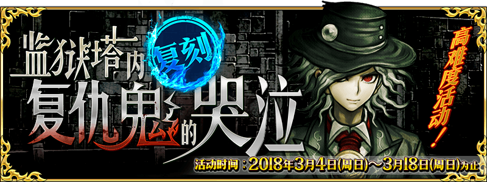
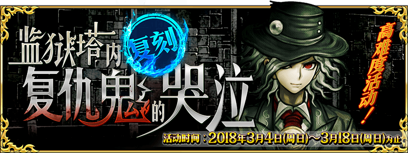

-
- ★☆★
- 引用本站的翻譯請註明本站名稱或網址
本站不像其他網站可以分工合作統整資料
而是獨自一人憑藉熱忱製作分享
引用本站的翻譯請註明本站名稱或網址
-
- ★☆★
- 本週Master任務(3/11 23:00～3/18 22:59)
任務 獎勵 No.1：通過這週全部的Master任務 x3No.2：執行30次友情點數召喚 x3No.3：擊倒9位Servant x3No.4：擊倒3位持有『善』屬性的Servant x3No.5：擊倒3位持有『惡』屬性的Servant x3No.6：擊倒15名持有『天』之力的敵人 x3No.7：擊倒15名持有『地』之力的敵人 x3
- ★☆★
- 【重要】Ver.1.11.0以後，關於從推薦環境以外的遊玩
-
- ★☆★
- 繁中(鬼島)/簡中版(復刻監獄塔)活動資訊頁面
測試頁面，不保證其後之維護
可在過去活動翻譯公告的活動概要區找到右側圖示連結到已建立的活動資訊頁面
 

- 9/27
- 【重要】關於於iOS 11的應用程式更新
☛「亞種特異點Ⅳ」新登場Servant已判明真名！
- 3/7
- 「迦勒底男孩收藏2018」舉辦決定！


| ・在「FGO冬祭 2017-2018」(大分會場)發表的新情報 | |||
| ・3/7維修公告(12:00實施) | |||
◆概念禮裝◆
・新增概念禮裝


◆活動相關◆
- 2/28
- 「1200萬DL突破宣傳活動」＆「Servant強化關卡 第8彈」


| ・關於能用3月交換券(2018)交換的道具 | |||
| ・2/28遊戲更新(17:00實施) | |||
◆Servant◆
・新增技能解放


・新增寶具解放


◆活動相關◆
・新增寶具解放
| 官方推特 |
|